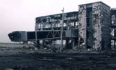
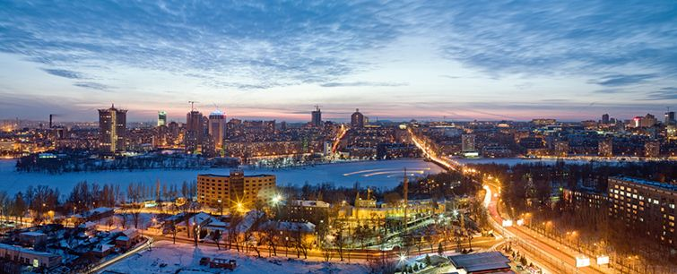

Découverte du Donbass : organisation d’un circuit sécurisé de découverte du Donbass pour les francophones du 16 au 22 octobre 2016
L’agence DONi Press, basée en République Populaire de Donetsk, dans le cadre du projet « Save Donbass People », organise des voyages découverte pour les amis du Donbass à l’automne 2016, en coordination avec les autorités locales.
Nous vous invitons à participer à ces circuits dans les Républiques de Donetsk et Lougansk, organisés pour un groupe de 15 personnes partageant la même langue.
Programme
Un programme d’une semaine vous invite à découvrir les richesses culturelles et historiques du Donbass et à faire une plongée dans l’actualité de ces jeunes Républiques nées de la guerre qui se déroule encore à leurs portes. Vous découvrirez de cette région particulière les paysages naturels, le patrimoine culturel, les villes et les villages, les activités économiques traditionnelles (agriculture et mines), et bien sûr les hauts lieux de l’Histoire passée et contemporaine.
Pour approcher la réalité de la guerre actuelle, nous vous proposerons de visiter des champs de bataille et des musées mais aussi de rencontrer des acteurs de cette page d’Histoire européenne : soldats, civils, personnalités politiques ainsi que les journalistes qui sur le front couvrent cette actualité brûlante. Le programme détaillé vous sera transmis ultérieurement dès sa finalisation et sa validation terminées.
Déroulement
Ce circuit découverte du Donbass (7 jours et 6 nuits) commence à Rostov-sur-le-Don, la ville russe frontalière de la République de Donetsk. Jusqu’à ce rendez-vous à Rostov, le déplacement et les formalités administratives (visa) sont à votre charge.
A votre arrivée à Rostov, un minibus vous transportera à travers la frontière jusque dans le Donbass, où votre programme final vous sera présenté à votre hôtel lors de votre dîner d’accueil. Dès le lendemain, le circuit accompagné en minibus vous emmènera pendant 5 jours à la découverte des sites remarquables des territoires des Républiques de Donetsk et Lougansk, avant de vous reconduire le 7ème jour jusqu’à Rostov-sur-le-Don.
Hébergement, restauration et transports
Les hébergements sont réalisés dans des hôtels de très bon niveau et pris en charge par le circuit.
A l’exception des petits déjeuners et de deux dîners encadrant le programme, les repas sont à votre charge dans des restaurants de qualité et très abordables (un très bon repas coûte en moyenne 10 euros/personne).
Les transports du programme sont tous pris en charge et un réseau important de transports en commun et taxis est à votre disposition pendant vos temps libres.
Tarification
Le coût total du circuit est de 9000 roubles (environ 125 €) + 7000 roubles par personne en chambre simple (environ 97 €) ou 4000 roubles par personne en chambre double (environ 55 €) + 100 euros de réservation couvrant les frais d'organisation.
Ce tarif comprend :
- Les transports Rostov/programme/Rostov
- Les hébergements
- Les petits déjeuners et 2 dîners
- Les visites
- Les prestations (chauffeur, organisateur, guides etc…)
Règlement
Les 100 euros de réservation sont a régler au minimum 14 jours avant le début du circuit par virement bancaire. Le règlement de l'hébergement et du prix du circuit sont à effectuer en espèces (en roubles) lors de votre arrivée dans le Donbass.
Observations
Aucun système bancaire international n’existant encore dans les Républiques vous devez donc vous munir d’espèces pour le règlement et la durée de votre séjour. Vous trouverez cependant des bureaux de change à Donetsk et Lougansk.
L’assurance voyage est à votre charge et en cas de problème médical nous avons la garantie des autorités de la gratuité de votre hospitalisation éventuelle ou de votre évacuation sanitaire sur Rostov.
Le programme défini est susceptible d’être changé en fonction de l’évolution éventuelle de la situation qui peut nous amener des contraintes ou des opportunités nouvelles.
Inscription et Contact
INSCRIPTION AVANT LE 2 OCTOBRE PAR EMAIL : ulfdis@dnipress.com
Pour tout renseignement , les coordonnées de votre accompagnatrice sont :
Christelle Néant, e-mail de contact : ulfdis@dnipress.com
Groupe de discussion sur Facebook : Amitiés France Donbass libre

Partager cette page